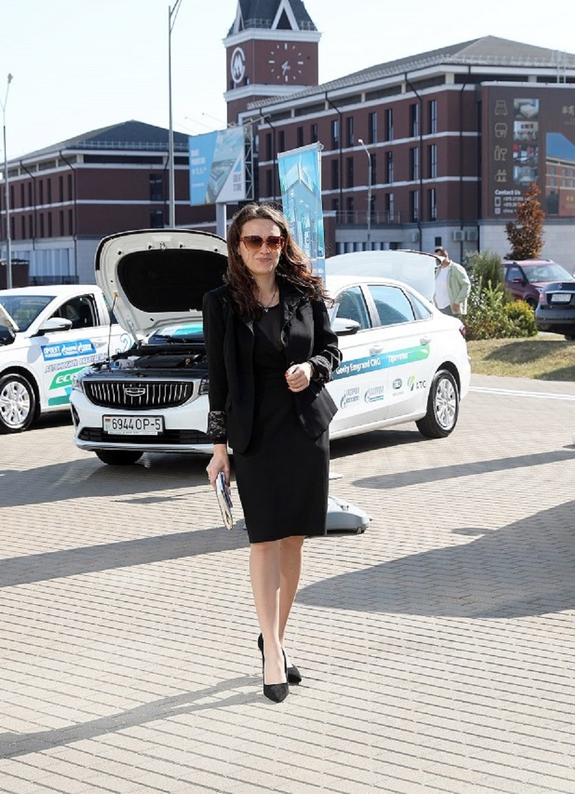

Казнадей Татьяна Александровна
Специалист группы по работе с клиентами

Образование
- В 2013 году закончила филологический факультет БГУ.
- в 2015-м получила второе высшее образование на факультете логистики в том же университете.
Опыт работы
- С 2014 по 2019 год я работала заведующим сектора организации экскурсий в музее истории Великой Отечественной войны,
где приобрела бесценный опыт в организации мероприятий и взаимодействии с посетителями.
- В моей профессиональной карьере важным этапом стала работа в ОАО «Газпром трансгаз Беларусь»,
куда я пришла в 2020 году.
- Начинала я работать в Администрации, в службе ССОиСМИ, затем перешла в УМТСиК,
а сейчас занимаю должность ведущего специалиста группы по работе с клиентами
в филиале «Управление «Экогаз».
Следующая страница
На главную